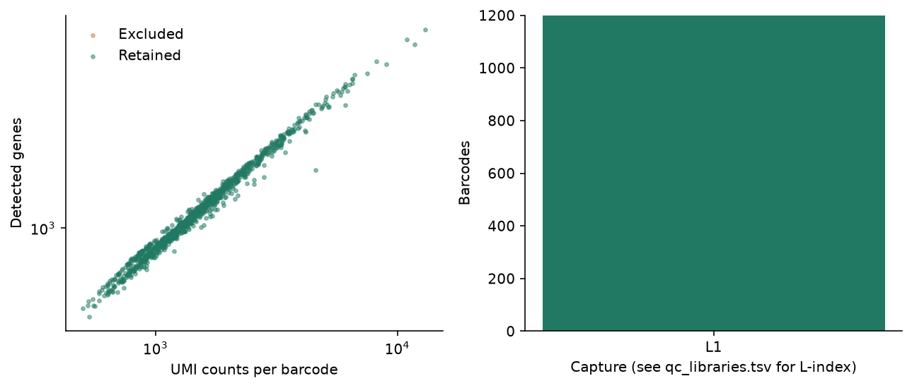
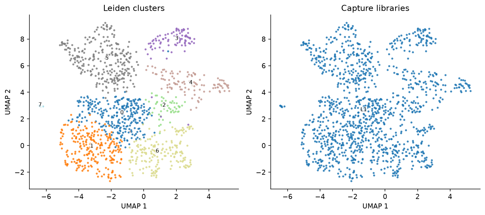

共有 1,200 个候选条码，保留 1,200 个，36,917 个共有基因，主分区得到 8 个簇。
| 捕获 | 输入条码 | 保留条码 | UMI 中位数 | 检出基因中位数 |
|---|---|---|---|---|
| GSM5320262 | 1,200 | 1,200 | 1,393 | 1,096 |


图中细胞多于五万时显示随机抽样。完整坐标和分区见 cells.tsv；聚类稳定性及成员重叠见 cluster_comparison.tsv 和 cluster_membership_overlap.tsv。
交接对象 analysis.h5ad 含完整分析基因轴、原始计数层、特征选择、PCA、UMAP、邻居图和分区。身份判定由后续注释人员完成。